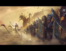

古墓王
古代的统治者相信永生的可能，所以他们创立了葬仪教派来帮助他们解开永生的秘密，在他们自己死后，他们被葬在豪华的金字塔中，并有士兵陪葬，因为他们相信自己会再次醒来从新统治帝国。
但之后发现复活并不完美，他们的统治者和其士兵都变成了一具具枯骨，这使得古墓群王大感不满却又无可奈何，但之后他们发现他们曾经的帝国早已不在，而且他们曾经的疆域被其他势力所占据，这使得他们非常愤怒，誓要将所有入侵者全部驱逐并恢复帝国往日的荣光。

古墓王的战士并不是完全的死尸，其中是有他们曾经的灵魂的，这使得他们还能依稀记得曾经的战斗技巧，而不是像纯粹的不死生物那样胡乱挥剑，并且古墓群王都是才华横溢的指挥官，他们懂得如何利用敌人的弱点，并给与致命一击。